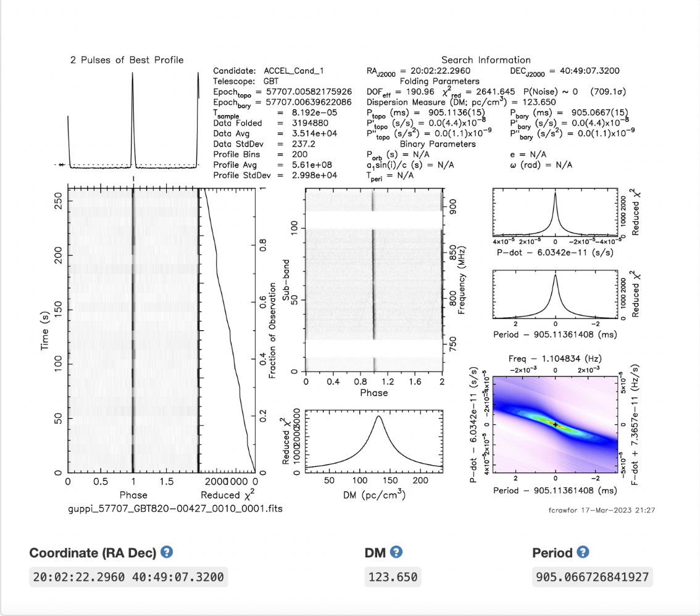

Research Projects
Project 1: Pulsar Research
How Access Was Gained:
During my Freshman year, I responded to an email from Dr. Crawford regarding my interest in his research and the NanoSTARS program. I have worked with him on his research since and was elected as a team leader at the start of my Junior year.
Research Description and Contribution:
I analyze survey data from radio telescopes searching for new pulsar signals. I filter radio frequency interferences, record redetections of known pulsars, and refold selected candidates for signal confirmation and further study. I have also used Python to program tools to sort and aid in sifting through data. I work as a team leader to introduce undergraduate students to pulsar research. I teach students on my team how to correctly interpret pulsar survey data; at the moment, we are working on analyzing data of the Crab Nebula to aid in training a machine learning algorithm.
So far I have individually analyzed approximately 70,000 candidates. My work expands the pulsar timing array which is used to aid in gravitational wave research; it is also used to train machine learning algorithms and AI to advance their use in pulsar analysis. My group discovered a new pulsar which is pending for publication.
Research Skills Developed:
I have learned how to interpret data, processes and information related to surveys and observational astrophysics, and how to utilize skills in Python programming within research. As a team leader I learned to effectively teach and present information.
Publications and Presentations:
- Poster Presentation: Pulsar Survey Data and Machine Learning at F&M Astrophysics Symposium (2024)
- Publication: Discovery of New Pulsar, Pending Publication
Project 2: Auroral Acceleration Region Research

How Access Was Gained:
During the winter of my sophomore year I applied to conduct research at West Virginia University (WVU) as part of their summer REU program. I was accepted and sent an email regarding details about the research project I would be conducting.
Research Description and Contribution:
In this project, I developed Python code to aid in loading, preparing, and analyzing data from Cluster mission crossings of the Auroral Acceleration Region (AAR). I observed and studied electric field wave power and plasma dynamics amongst three spacecraft crossings of the AAR. I presented my findings to the plasma physics department at WVU, at the WVU summer research symposium, and in the fall at Franklin and Marshall College. My work was part of a larger project to analyze the AAR using a multitude of different spacecrafts.
I wrote a Python package so others could apply my calculations to their work. This package is able to put data from the Cluster mission into a manageable format and can run a series of calculations to modify the data. I also updated my program to be easier to use, I worked directly with a high school student and taught programming basics to make space physics research more accessible.
Research Skills Developed:
In the field of plasma physics I learned how to work with data taken by a spacecraft, and developed my skills in Python. In particular, I learned how to make my code accessible for use by others. I also learned how to effectively read research papers and present my work.
Publications and Presentations:
- Presentation: "Analysis of AAR Data from Cluster Mission", WVU Summer Research Symposium (2023)
Project 3: Fast Radio Bursts (FRBs) Research

How Access Was Gained:
I had read about Fast Radio Bursts (FRBs) also known as Lorimer Bursts, and coincidentally Dr. Lorimer, who originally discovered these signals, worked at WVU where I was actively doing research. I reached out to him and his team and discovered they had data taken over the last few years as part of the GREENBURST search system. I offered to apply my skills in survey analysis to this data; I brought this dataset back to my NanoSTARS team and we completed the dataset as an independent project.
Research Description and Contribution:
After receiving the data, I wrote Python code to organize and upload it. I learned to check single pulse FRB data and taught my group to repeat this process. After filtering for radio frequency interference and known signals, I analyzed the single pulse FRB data and marked potentially new signals. I then checked these candidates against the Transient Name Server, a collection of signals that contains known FRBs. After discussing my results with Dr. Lorimer and his team, we concluded that two strong plots were new signals and possibly contained a new FRB. A handful of other plots contained detections of known repeating FRBs. Because these repeaters had little data on them, my work directly resulted in new information on these signals. These results are not yet published, the signals are in the process of being investigated further.
Research Skills Developed:
While working on this project, I built skills to organize and complete research independently. I also learned how I can apply research skills I have learned in previous work to new projects.
Publications and Presentations:
- Presentation: "Analysis of Fast Radio Bursts from GREENBURST Dataset", NanoSTARS Research Group (2024)